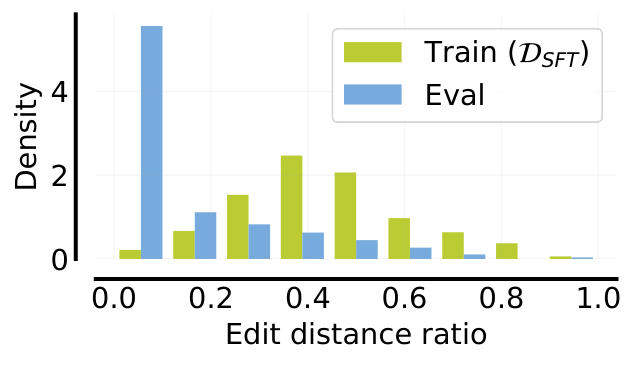
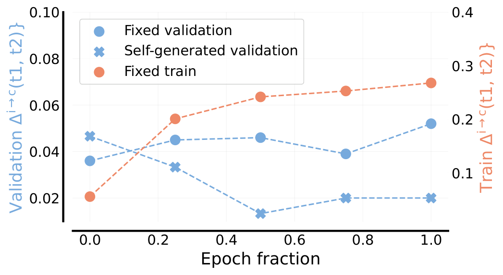
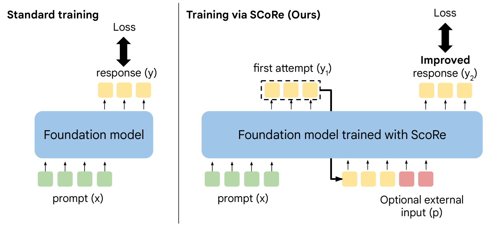
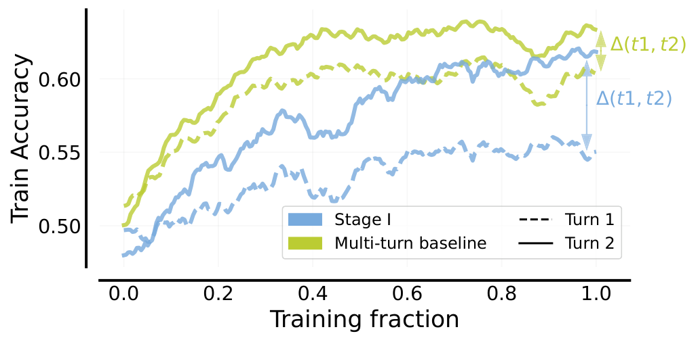
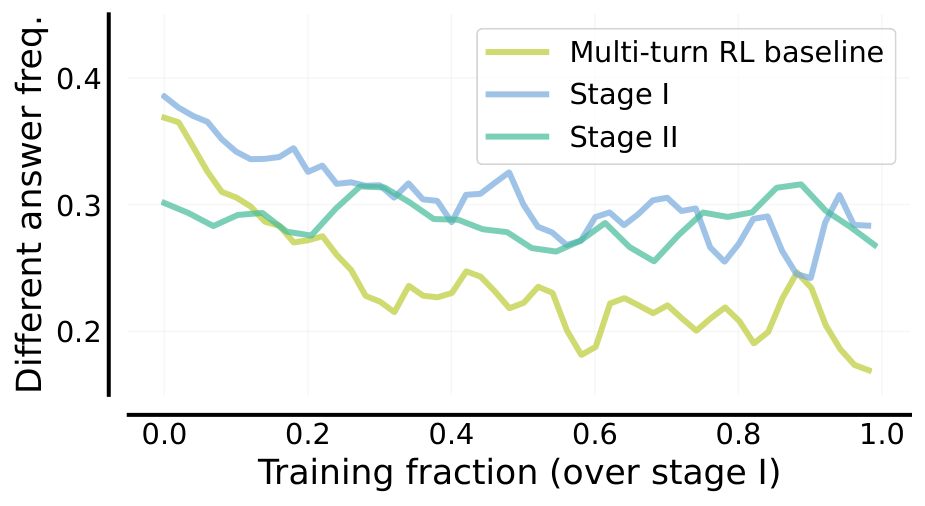
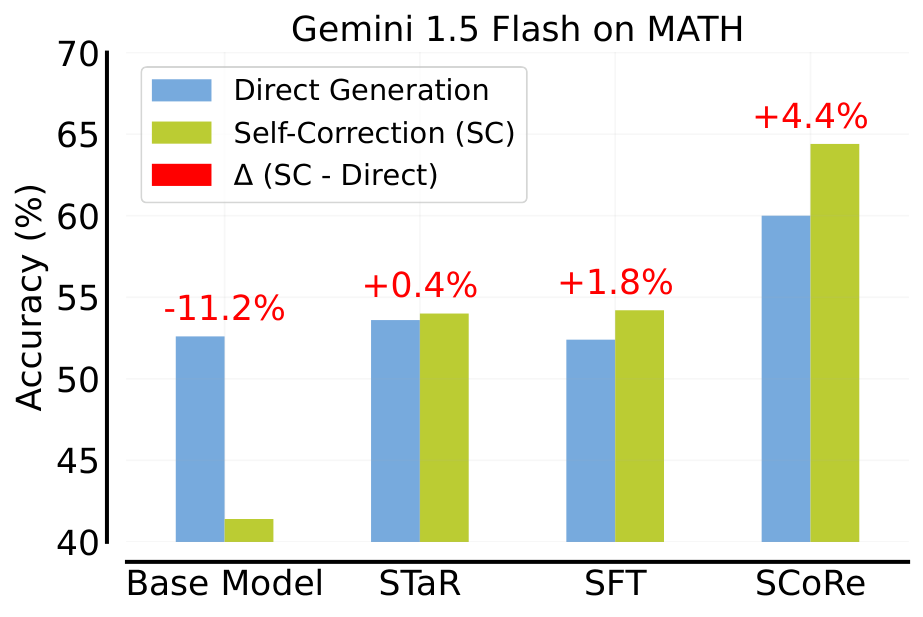
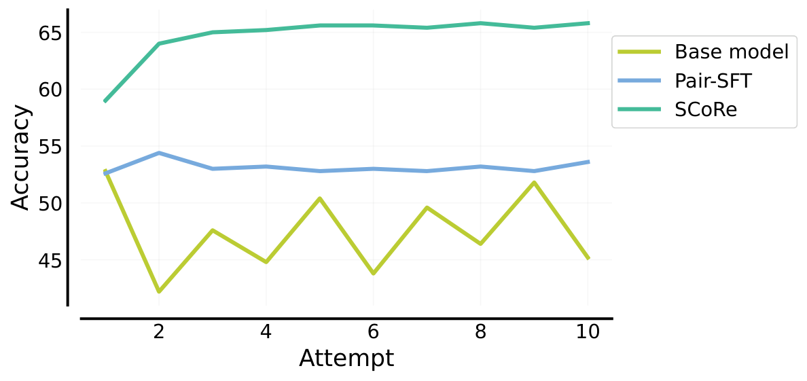
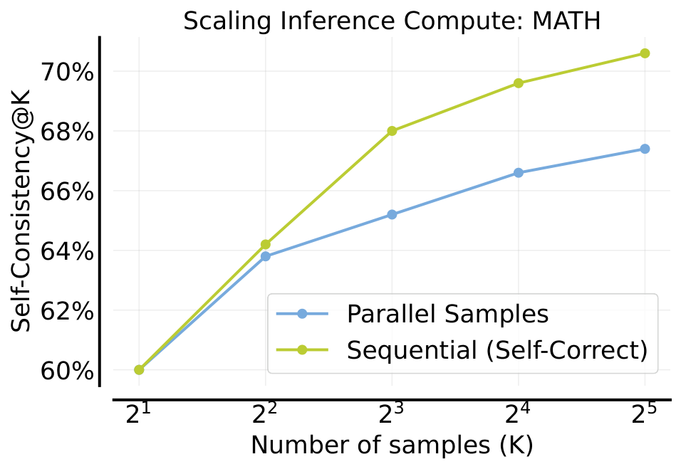
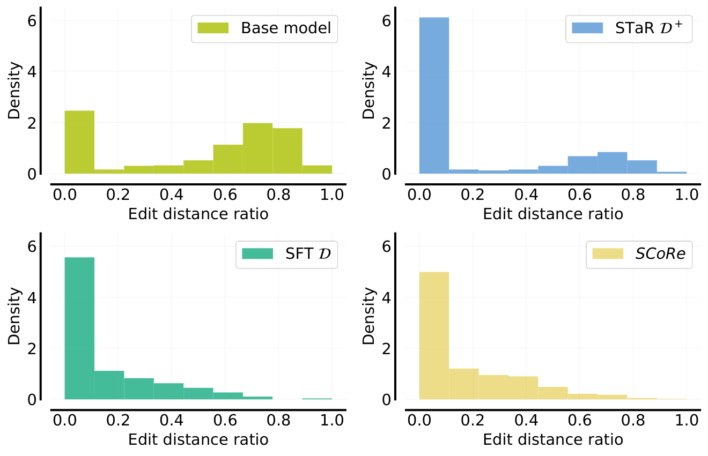
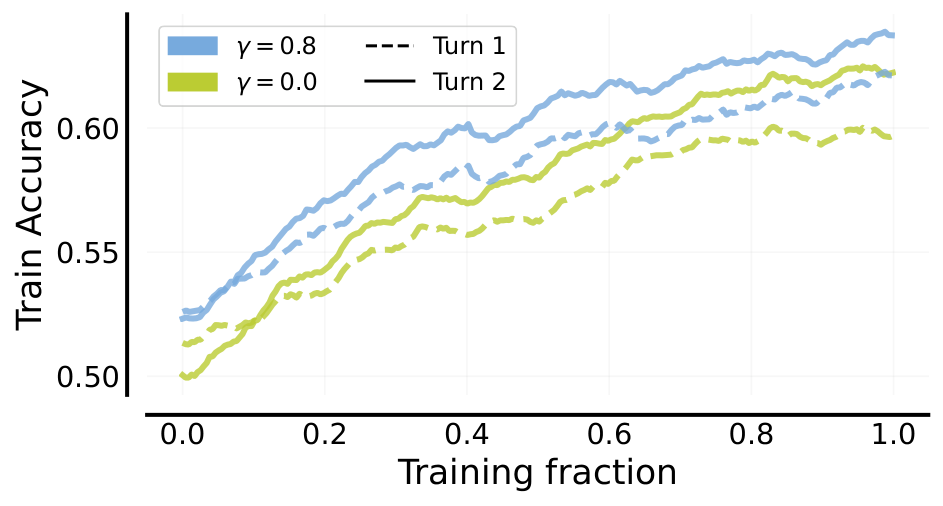

自我纠错（Self-Correction）是大语言模型的一个重要能力：模型应该能发现自己在推理中的错误并修正。但现代LLM的自我纠错能力严重不足，甚至在被明确要求检查时也不会改进答案。
SCoRe（Self-Correction via RL）提出了一种多轮在线强化学习方案，完全使用模型自生成数据训练。核心洞察是：SFT在纠错数据上训练会面临分布偏移（训练用的纠错轨迹来自不同策略）和行为坍缩（模型学会不做修改以最大化似然）。SCoRe通过两阶段多轮RL解决了这些问题，在MATH和HumanEval上取得了目前最优的自我纠错性能。
SFT在模型生成的纠错轨迹上训练时面临两个根本问题：
分布偏移：训练数据由某个策略收集，但模型自己的错误模式和该策略不同：模型在训练时看到的是「别人的错误」，而不是「自己的错误」。
行为坍缩：最大化似然训练倾向于让模型学会「不做修改」：因为修改会增加token生成概率的乘积，而不修改（保留原答案）的似然更高。SFT模型在测试时几乎不做任何编辑，即使被要求检查错误也不会改进。


SCoRe是一个两阶段多轮RL方法，完全使用模型自生成数据训练。整个流程如下图所示：

标准多轮RL训练会导致两次尝试的响应高度耦合，后续迭代的覆盖范围很差。阶段I专门设计了一个初始化策略来缓解这个问题：通过多轮RL在基础模型上首次训练，生成一个不容易坍缩的策略初始化。
下图展示了阶段I训练的效果对比：有了阶段I的初始化，策略的 (t1,t2) 覆盖率更高，探索行为更好，最终性能也更好。


阶段II在阶段I的初始化基础上，使用奖励塑形（Reward Shaping）来放大纠错行为。核心思想是：对第二次尝试正确但第一次尝试错误的样本给予额外奖励，鼓励模型学会真正的纠错而非保持不变。
奖励函数设计为：R = R(t2) + α·[R(t2) > R(t1)]，其中第二项是纠错奖励：只有当第二次尝试比第一次更好时才给予。这利用了多轮交互的特性：第一次尝试提供了自然的基线，使奖励塑形可以针对性地奖励纠错行为。
在MATH和代码生成（MBPP、HumanEval）上的实验结果显示：
MATH：SCoRe在Gemini 1.0 Pro上提升15.6%，在1.5 Flash上提升9.1%。多个尝试次数下性能持续提升，10次尝试时准确率接近60%。
HumanEval：SCoRe在Gemini 1.0 Pro上提升9.1%。
与SFT基线对比：SCoRe在所有指标上显著优于SFT基线，包括STaR和NReference等变体。SFT模型虽然首次尝试准确率提高，但纠错能力几乎没有改善。
推理时计算扩展：SCoRe的自我纠错能力随推理计算量增加而持续提升，说明模型真正学会了利用额外计算来提高准确率，而非简单地重复生成。



对SCoRe训练后的行为分析揭示了几种有效的纠错策略：
答案更改：模型在第二次尝试中更频繁地更改答案，且更改后正确的比例显著提高。
编辑距离：SCoRe的编辑距离分布显示模型做了有意义的编辑（不仅是微小改动），而SFT模型几乎不做编辑。
折现回报：SCoRe训练过程中，第二次尝试的折现回报持续上升，说明模型确实在从纠错中获益。


参考：https://arxiv.org/abs/2409.12917